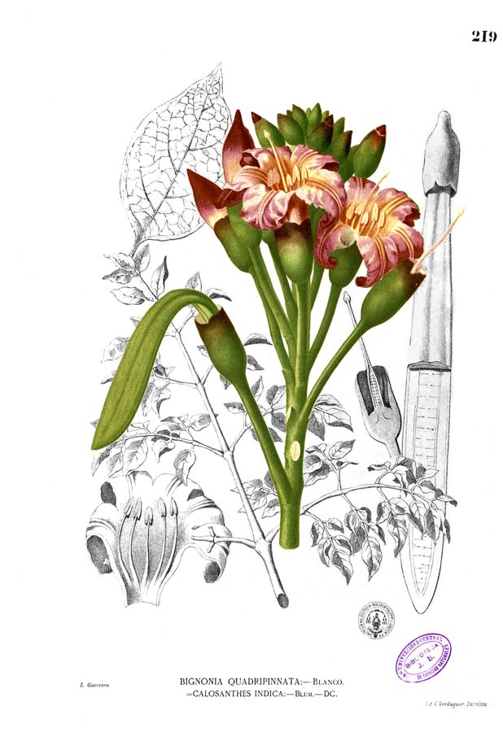

श्योनाकIndian Trumpet Tree
Oroxylum indicum · Bignoniaceae · FLR-0356

- Scientific name वैज्ञानिक नाम
- Oroxylum indicum (L.) Kurz
- Family कुल
- Bignoniaceae
- Hindi हिंदी
- श्योनाक
- Local names स्थानीय नाम
- shyonak, indian trumpet tree, aralu, tintuka
- Status here यहाँ की स्थिति
- native
- Movement आवागमन
- Resident, here all year
- Known from कहाँ दर्ज
- Others have published records from the Basti–Ayodhya districts बस्ती–अयोध्या के ज़िलों से दूसरों के प्रकाशित अभिलेख
- IUCN IUCN
- not evaluated
- Review समीक्षा
- not yet reviewed
When to look कब देखें
Present all year. साल भर मौजूद।
Uses and possibilities उपयोग और संभावनाएँ
“Traditional medicine” means a documented traditional use, not a claim that it works. Nothing on this page is medical advice.
Drawn from the documented uses in the profile below, where each is labelled traditional, current or a research lead. All uses →
Tell it apart from इनसे अलग पहचानें
श्योनाक / Indian Trumpet Tree
Oroxylum indicum (L.) Kurz — Bignoniaceae
श्योनाक — यह भारत के जंगलों में पाया जाने वाला एक अद्भुत और महत्वपूर्ण औषधीय पेड़ है। इसके पत्ते विशालकाय होते हैं जो कई बार विभाजित होकर टहनियों के सिरों पर छतरी जैसी रचना बनाते हैं। रात में इसके बड़े, गहरे लाल-बैंगनी तुरही जैसे फूल खिलते हैं जिनसे चमगादड़ आकर्षित होते हैं। सर्दियों में पेड़ पर लंबी तलवार जैसी लटकती हुई फलियां दिखाई देती हैं, जिसके कारण इसे 'उल्लू की पूंछ' भी कहा जाता है। इसके बीज पतले कागज जैसे परों से घिरे होते हैं।
Quick Identification त्वरित पहचान
| Feature | Description |
|---|---|
| Habit | Small to medium-sized sparsely branched deciduous tree with soft light greyish-brown bark |
| Leaves | Enormous ternately bipinnate or tripinnate compound leaves crowded at branch tips |
| Flowers | Large fleshy campanulate-tubular reddish-purple to dull pink flowers opening at night |
| Inflorescence | Massive erect terminal raceme standing well above the crown foliage |
| Fruit | Very long, flat, sword-like woody capsule hanging vertically from bare branches |
| Seeds | Numerous flat seeds surrounded by a broad transparent papery silvery wing |
Field tip: Look in moist woodland margins and ravine tracts for a tree with giant compound leaves and, in winter, long flat sword-like pods hanging down like scabbards from the leafless branch tips.
हिंदी: इसके पत्ते बहुत बड़े और पंखदार होते हैं। जाड़ों में जब पत्ते गिर जाते हैं, तो डालियों पर एक-दो हाथ लंबी चपटी फलियां तलवार की तरह लटकती रहती हैं।
Morphology आकारिकी
| Measurement | Range |
|---|---|
| Leaf diameter | 2–4 ft. (Hooker 1885) |
| Leaflet dimensions | 5 by 3–4 in. (Hooker 1885) |
Oroxylum indicum forms a small to medium-sized deciduous tree with few branches and light greyish-brown corky bark marked by prominent leaf scars. The enormous leaves are ternately bipinnate or tripinnate, crowded towards the ends of the thick branchlets, with a stout cylindrical rachis.
The leaflets are ovate to elliptic, entire, acuminate at the apex, rounded or slightly cordate at the base, and shortly petioluled. The inflorescence is a huge erect terminal raceme arising above the foliage. The flowers are large and fleshy, with a campanulate leathery calyx and a dark purplish or reddish-violet tubular corolla that emits a heavy nocturnal odor. The fruit is a massive, woody, flat, sword-shaped capsule dehiscing into two valves, containing hundreds of flat seeds bordered by a broad silvery papery wing.
हिंदी: इसके पत्ते बहुत फैले हुए और विशाल होते हैं। टहनियों के ऊपर फूलों की एक लंबी डंडी निकलती है जिसमें रात को बड़े मांसल फूल खिलते हैं। इसकी फलियां बहुत चौड़ी और चपटी होती हैं।
Behaviour & Ecology व्यवहार और पारिस्थितिकी
The Indian trumpet tree is renowned as an obligate bat-pollinated tree (chiropterophilous). Its large fleshy flowers open after dusk, producing copious nectar and a strong, somewhat foetid musky odor that attracts fruit bats through the darkness. Bats cling to the leathery floral tube to lap nectar, dusting their fur with pollen that is transferred between trees.
The immense leaves are dropped in late winter, leaving the thick branchlets bare while the heavy sword-like capsules remain suspended against the sky. During the dry pre-monsoon heat, the capsules split open down both sutures, releasing hundreds of light winged seeds that are carried aloft by convective thermals over significant distances.
हिंदी: इसके फूल रात के समय खिलते हैं और उनमें से एक तेज गंध निकलती है जिससे चमगादड़ खिंचे चले आते हैं। चमगादड़ ही इसके फूलों का परागण करते हैं। गर्मियों में फलियां फटती हैं और हवा में उड़ने वाले पतले परों जैसे बीज बिखरते हैं।
Life Cycle / Phenology जीवन चक्र
Leaf fall occurs between January and March, after which the tree remains almost completely leafless for several weeks. Fresh foliage flushes vigorously in May and June with the arrival of high temperatures and early monsoon moisture.
Flowering takes place during the rainy season from June to August, with nocturnal blossoms opening progressively along the tall upright terminal spike. The flat woody capsules develop through the monsoon and autumn, maturing by December and persisting on the bare tree well into late spring before dehiscing.
हिंदी: गर्मियों के शुरू में नए पत्ते आते हैं और बरसात के महीनों में बड़े फूल खिलते हैं। जाड़े तक लंबी फलियां तैयार हो जाती हैं जो अगली गर्मियों तक पेड़ पर लटकी रहती हैं।
Associated Species / Interactions सहजीवी प्रजातियाँ
Nocturnal floral visitors and primary pollinators include the Short-nosed Fruit Bat (Cynopterus sphinx) and the Indian Flying Fox (Pteropus medius), which feed on the abundant nectar and pollen.
In natural mixed deciduous tracts, it associates with Palash (Butea monosperma) and Arjun (Terminalia arjuna). Hawkmoths also visit the open flowers at dusk, while wood-boring insects nest in old fallen capsules.
हिंदी: रात में चमगादड़ इसके फूलों पर आते हैं और रस पीते हैं। जंगल में यह पलाश और अर्जुन के पेड़ों के साथ उगता है। इसके सूखे खोखले फलों में कई छोटे कीड़े आश्रय लेते हैं।
Pests and Diseases कीट और रोग
Foliage is occasionally attacked by defoliating caterpillars of sphinx moths and tingid lace bugs that feed on the sap of young leaflets during the humid monsoon. Powdery mildew can coat the massive leaves in late autumn before natural senescence.
Seedlings are sensitive to severe drought and frost, while mature trees in waterlogged soils may suffer from root rot caused by Ganoderma species. Over-harvesting of the root bark by commercial collectors poses a severe threat to wild populations.
हिंदी: नम मौसम में पत्तियों पर सफेद फफूंद (पाउडरी मिल्ड्यू) की परत आ सकती है। इसके अलावा दवा के लिए जड़ों की अंधाधुंध खुदाई से इस पेड़ के अस्तित्व को बहुत खतरा रहता है।
Agricultural / Human Relevance कृषि प्रासंगिकता
Oroxylum indicum is one of the most celebrated medicinal plants in classical Indian medicine, forming an essential component of the renowned Ayurvedic formulation Dashamoola (the ten roots) and Chyawanprash. The root bark and stem bark are rich in flavonoids including baicalein and chrysin.
The young tender pods and seeds are occasionally consumed as a seasonal wild vegetable in tribal and sub-Himalayan communities. The soft light wood is unsuitable for timber but has been used locally for matchboxes and packaging; this is a record of traditional use, not medical advice.
Traditional: Root bark used in Dashamoola preparations for vitality, respiratory ailments, and inflammation.
Today: Cultivated in herbal gardens and protected forest plots for sustainable pharmaceutical supply.
Research direction (a lead, not a result): Investigation of baicalein derivatives for neuroprotective and anti-inflammatory pathways.
हिंदी: आयुर्वेद के प्रसिद्ध 'दशमूल' और च्यवनप्राश में इसकी जड़ की छाल एक मुख्य घटक है। वात और सांस की बीमारियों में इसका पारंपरिक उपयोग होता है। इसके कोमल फलों की सब्जी भी कुछ क्षेत्रों में बनाई जाती है।
Expected Locally स्थानीय रूप से अपेक्षित
Not a field record. Written from published accounts for eastern Uttar Pradesh. No confirmed local sighting yet — if you have seen it, that is what the atlas needs.
अभी तक स्थानीय पुष्टि नहीं। यह विवरण प्रकाशित स्रोतों से है, किसी अवलोकन से नहीं।
In eastern Uttar Pradesh, Oroxylum indicum occurs in moist woodland pockets, ravine belts along the Ghaghara basin, and protected temple groves across Basti, Ayodhya, and Sant Kabir Nagar districts. GBIF holds published records from these districts. A confirmed local record requires a dated photograph showing diagnostic floral or vegetative features submitted through the project portal.
हिंदी: बस्ती, संतकबीरनगर और अयोध्या के तराई वाले जंगलों और पुराने बाग-बगीचों में यह पेड़ पाया जाता है। यदि आपको तलवार जैसी फलियों वाला यह पेड़ दिखे तो इसकी फोटो अवश्य साझा करें।
Distribution वितरण
Global range: Native to the tropical Indian subcontinent, southern China, Myanmar, Thailand, Indochina, Malaysia, the Philippines, and Indonesia.
In India: Found across the sub-Himalayan tract, the moist deciduous forests of eastern and peninsular India, and the Western Ghats.
In Uttar Pradesh: Distributed in the Terai belt, northern Oudh woodlands, and eastern plain forest divisions.
In Basti district / eastern UP: Documented in regional floras and forestry records; confirmed in published biodiversity surveys for the core districts.
हिंदी: यह भारत से लेकर चीन और इंडोनेशिया तक के नम उष्णकटिबंधीय जंगलों में मिलता है। उत्तर प्रदेश के तराई और पूर्वांचल के जंगलों में इसका प्राकृतिक वास है।
Research Questions शोध प्रश्न
- Which bat species are responsible for the majority of successful pollination visits to Oroxylum indicum in eastern UP?
- How does wild harvest of root bark for Ayurvedic formulations impact population survival in local forest tracts? / क्या दवा के लिए जड़ें खोदने से इसके जंगली पेड़ों की संख्या घट रही है?
- What is the effective wind-dispersal distance of its papery winged seeds across open agricultural landscapes?
- How do temperature and moisture thresholds affect the germination of fresh versus stored winged seeds?
- What traditional ecological knowledge exists among rural vaidyas regarding sustainable harvesting of shyonak bark? / स्थानीय वैद्य इसके छाल निकालने के क्या पारंपरिक नियम अपनाते हैं?
हिंदी: इसके बीजों को हवा कितनी दूर तक उड़ा ले जाती है? चमगादड़ों के बिना क्या इस पेड़ का फल बनना संभव है, इस पर स्थानीय स्तर पर शोध की जरूरत है।
Similar Species मिलती-जुलती प्रजातियाँ
| Species | How to tell apart | हिंदी | |
|---|---|---|---|
| [[neem | Azadirachta indica]] | Once-pinnate serrated leaves and small white daytime flowers with small yellow drupes | नीम |
| [[saptaparni | Alstonia scholaris]] | Whorled simple obovate leaves with milky latex and slender pendulous paired follicles | सप्तपर्णी |
Field rule: Enormous ternately compound leaves, nocturnal purple campanulate flowers, and giant sword-like flat pods distinguish Oroxylum indicum from all other regional trees.
हिंदी: इसके विशाल पंखदार पत्ते और तलवार जैसी लटकती हुई लंबी फलियां इसे किसी भी अन्य पेड़ से बिल्कुल अलग बना देती हैं।
Taxonomy & Classification वर्गीकरण
Original description. Described by Carl Linnaeus in 1753 as Bignonia indica in Species Plantarum, Vol. 2, p. 625. Transferred to Oroxylum by Wilhelm Sulpiz Kurz in 1877 in Forest Flora of British Burma, Vol. 2, p. 237. Hooker (1885) treats it as Calosanthes indica Blume.
Subspecies. Monotypic — no subspecies are currently recognised.
Family and order placement. Placed in the family Bignoniaceae, order Lamiales.
Phylogenetic notes. Oroxylum represents a monotypic Asian lineage closely related to other bat-pollinated big-podded bignoniads.
IUCN status rationale. Not evaluated by the IUCN Red List (not_evaluated). Although widespread in Asia, wild populations in India face depletion due to commercial root harvesting.
हिंदी: इसका पहला वैज्ञानिक विवरण 1753 में लिनिअस ने दिया था। बाद में कुर्त्ज ने इसे ओरोक्सिलम वंश में रखा। अत्यधिक दोहन के कारण इसके संरक्षण की आवश्यकता है।
Photo Gallery फोटो गैलरी
No photos yet — add field photos to media/species/indian_trumpet_tree/ and run node scripts/sync_photos.js.
Photos needed आवश्यक फोटो
- [ ] Habit of tree showing sparse branching and massive compound leaves (पेड़ का पूरा आकार)
- [ ] Erect terminal inflorescence with large nocturnal flowers (ऊपर की ओर उठी फूलों की डंडी)
- [ ] Flat sword-like capsule hanging on leafless branches (तलवार जैसी लटकी हुई फली)
- [ ] Papery winged seeds released from dehisced pod (पतले परों वाले उड़ने वाले बीज)
References संदर्भ
- Linnaeus, C. (1753). Species Plantarum, Vol. 2, p. 625 (as Bignonia indica).
- Kurz, S. (1877). Forest Flora of British Burma, Vol. 2, p. 237.
- Hooker, J. D. (1885). The Flora of British India, Vol. 4. L. Reeve & Co., London (as Calosanthes indica).
- Duthie, J. F. (1903). Flora of the Upper Gangetic Plain, and of the Adjacent Siwalik and Sub-Himalayan Tracts, Vol. 1. Office of the Superintendent of Government Printing, Calcutta.
- Kirtikar, K. R. & Basu, B. D. (1933). Indian Medicinal Plants, 2nd ed. Lalit Mohan Basu, Allahabad.
- GBIF Occurrence Data — Oroxylum indicum, India (2025).
Source file: species/flora/trees/indian_trumpet_tree.md